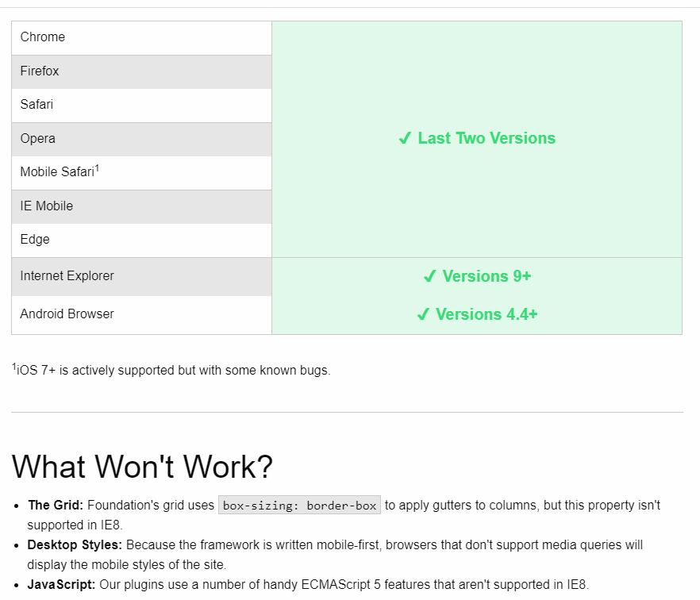
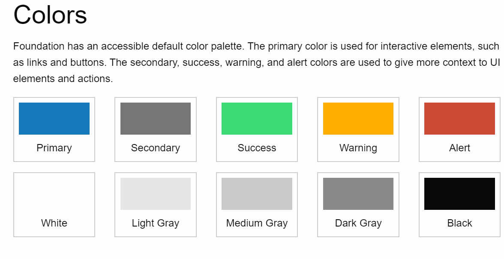

Foundation Framework utvecklades och släpptes 2011 av Zurb som ett öppet-källkods-ramverk. Den första versionen var en samling av Zurbs CSS-regler, jQuery-plugin och HTML. Nuvarande version är Foundation Framework 6. Foundation är ett frontend-ramverk optimerat för mobila plattformar. Foundation är ett avancerat verktyg för att snabbt bygga upp en prototyp och skapa en webbsida från mobiltelefoner till en dator eller TV.
Anledningen till att Foundation är optimerad för mobila plattformar är för att man vill uppmuntra skapandet av webbsidan för portabla enheter och sen expandera till större skärmar och avancerade enheter. Det är inte obligatoriskt att börja från mobila enheter men man uppmuntrar normen för att senare kan man bara skala upp allt. Bästa sättet att förklara utvecklingen är att allt som inte är inom ett media bibliotek är en mobilsida.
Som vanligt så är den största skillnaden mellan ramverk inre och yttre faktorerna. Inom dom yttre faktorerna så har Bootstrap en större community än Foundation vilket ger den en större fördel medans Foundation har en mer ren syntax, alltså mindre kod. Exempelvis grid är renare hos Foundation p.g.a att man inte använder container men istället row för både kolumner och rader vilket märks i DOM. Ett exempel är hur man gör en liten kolumn. För Bootstrap så är det .col-xs-1 men hos Foundation är det .small-1.columns. om vi kollar på hur mediaquerys med liten storlek kodas så använder Foundation @media screen and (min-width: 40em) och Bootstrap använder @media (min-width: 34em). Man märker att Foundation har en renare och lättare kod än Bootstrap.
FF är enkelt att använda och ger möjligheten att ändra CSS reglerna enligt utvecklarens smak och Foundation har förberett sig för det. Om man tittat på Bootstrap så tar det mer tid att ändra alla viktiga regler för att man måste implementera SASS. FF har SASS inbyggt, vilket är varför FF är ett slagkraftigt alternativ till Bootstrap. En annan fördel med Foundation är att ramverket utvecklas av företaget Zurb hela tiden med lite hjälp från community.
Foundation är kompatibelt med de flesta moderna webbläsare, från de två senaste versionerna, samt från och med Internet Explorer 9. iOS stöds från och med version 7.0, men det förekommer en del buggar. Till Android finns det stöd från och med version 4.4.